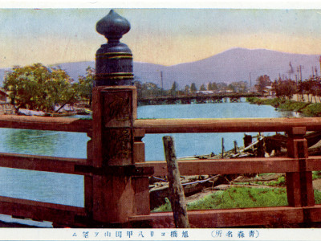
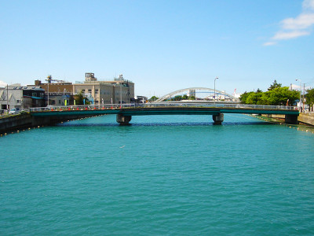

旭橋
「自分の來しかた行末を考へた」（太宰治「思ひ出」）橋
写真をクリックすると拡大表示します。 
{kind=link}
{kind=link}
太宰治が旧制・青森中学校へ通学するために渡っていた橋です。
青森駅から2㎞、山側から陸奥湾へ流れる堤川（つつみがわ）に今も架かっています。
太宰が朝夕、渡っていたころは「朱で染めた橋のまるい欄干」（「思ひ出」）が特徴でした（写真左 提供：青森まちかど歴史の庵 奏海）。
太宰治の下宿跡地前の道を東へ(右へ)進むと今は、「うとう橋」という橋に出ますが、太宰が暮らしていた当時は、 うとう橋はまだなく、現うとう橋より海寄りの旭橋を渡るコースが、中学校への最も近いコースでした。
自伝的小説「思ひ出」では、堤川を「隅田川に似た廣い川」と表現、 中学校3年生の時、旭橋の上で物思いをした時のことが綴られています。
「橋をかたかた渡りながら、いろんな事を思ひ出し、また夢想した。 そして、おしまひに溜息ついてからかう考へた。えらくなれるかしら」。
自分の来し方行く末を考え、心の焦りを感じ、すべてに関して満足し切れず、 空虚なあがきをしていた、といったことも記されています。
「津軽」でもこの部分を引用、旭橋が海に近い場所に架かっていることから、
「川といふものは、海に流れ込む直前の一箇所で、奇妙に躊躇して逆流するかのやうに流れが鈍くなるものである。 私はその鈍い流れを眺めて放心した」と述懐、青森中学校在学時について、 「私の青春も川から海へ流れ込む直前であったのであらう」と記し、
「青森に於ける四年間は、その故に、私にとって忘れがたい期間であった」と書いています。
旭橋の北方向は海（写真右・現在は建物が建ち、海が見通せない）。 堤川とその先の海を眺めていた、太宰治自身と言えるであろう主人公は「創作」に光を見出し、 「作家にならう、作家にならう、と私はひそかに願望」、同人雑誌を作るようになりました。
焦り、不満足感、不安感、分類できない感情、痛み・・。 もし、そのような心模様を抱いて行き場のないような気分になったとき、 「思ひ出」の主人公がそうしたように、旭橋から水面を、さらには海方向を眺めてみませんか？
「思ひ出」という物語が描いた場所・風景、例えば旭橋とそこから眺める川と海も、 土地の記憶として、困難を少し変えられる場所の力・風景の力を宿しているような気がします。
散歩してはいかかでしょうか？このスポットは次の散歩コースに組み込まれてます。太宰治の下宿跡地前の道を東へ(右へ)進むと今は、「うとう橋」という橋に出ますが、太宰が暮らしていた当時は、 うとう橋はまだなく、現うとう橋より海寄りの旭橋を渡るコースが、中学校への最も近いコースでした。
自伝的小説「思ひ出」では、堤川を「隅田川に似た廣い川」と表現、 中学校3年生の時、旭橋の上で物思いをした時のことが綴られています。
「橋をかたかた渡りながら、いろんな事を思ひ出し、また夢想した。 そして、おしまひに溜息ついてからかう考へた。えらくなれるかしら」。
自分の来し方行く末を考え、心の焦りを感じ、すべてに関して満足し切れず、 空虚なあがきをしていた、といったことも記されています。
「津軽」でもこの部分を引用、旭橋が海に近い場所に架かっていることから、
「川といふものは、海に流れ込む直前の一箇所で、奇妙に躊躇して逆流するかのやうに流れが鈍くなるものである。 私はその鈍い流れを眺めて放心した」と述懐、青森中学校在学時について、 「私の青春も川から海へ流れ込む直前であったのであらう」と記し、
「青森に於ける四年間は、その故に、私にとって忘れがたい期間であった」と書いています。
旭橋の北方向は海（写真右・現在は建物が建ち、海が見通せない）。 堤川とその先の海を眺めていた、太宰治自身と言えるであろう主人公は「創作」に光を見出し、 「作家にならう、作家にならう、と私はひそかに願望」、同人雑誌を作るようになりました。
焦り、不満足感、不安感、分類できない感情、痛み・・。 もし、そのような心模様を抱いて行き場のないような気分になったとき、 「思ひ出」の主人公がそうしたように、旭橋から水面を、さらには海方向を眺めてみませんか？
「思ひ出」という物語が描いた場所・風景、例えば旭橋とそこから眺める川と海も、 土地の記憶として、困難を少し変えられる場所の力・風景の力を宿しているような気がします。